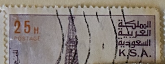
| SOURCE | TITLE| IMAGE MATCH | click to source page |
| Find Your Stamps Value | Al Khafji oil rig - جهاز تنقيب النفط الخفجي 40h Magenta & orange stamp price, value |  |
| HipStamp | Browse Products in Middle East > Saudi Arabia / HipStamp |  |
| Dreamstime.com | Saudi Postage Stamp Stock Photos - Free & Royalty-Free Stock Photos from Dreamstime |  |
| HipStamp | Browse Products in Middle East > Saudi Arabia / HipStamp | 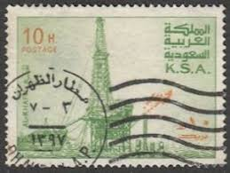 |
| eBay | SAUDI ARABIA 890 - Al Khafji Oil Rig "1982 Perf 14.0 x 13.5" (pb36499) | eBay | 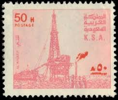 |
| Alamy | SAUDI ARABIA - CIRCA 1977: a stamp printed in the Saudi Arabia shows Holy Kaaba, Sacred House at the Centre of Mosque Al-Masjid al-Haram, Most Sacred Stock Photo - Alamy | 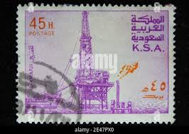 |
| Find Your Stamps Value | Value of 15 heller stamps | 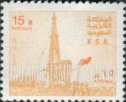 |
| Find Your Stamps Value | Value of oil rig 1986 stamps |  |
| Alamy | Khafji hi-res stock photography and images - Alamy | 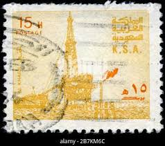 |
| Colnect | Stamp: Al Khafji Oil Rig - Producing Plant (Saudi Arabia(Al Khafji Oil Rig) Mi:SA 609Ia,Sn:SA 740,Yt:SA 450,Sg:SA 1176a 📮 | 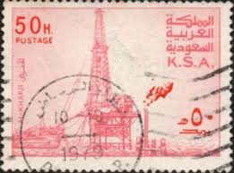 |
| iStock | Postage Stamp Of Libyan Arab Jamahiriya Stock Photo - Download Image Now - 1984, Antique, Black Background - iStock | 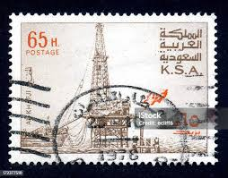 |
| HipStamp | Saudi Arabia - #750 Oil Rig - Used | Middle East - Saudi Arabia, General Issue Stamp / HipStamp | 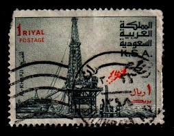 |
| Shutterstock | 28 Al Khafji Royalty-Free Images, Stock Photos & Pictures | Shutterstock | 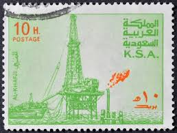 |
| HipStamp | Saudi Arabia 1976-81 Oil Rig at Al-Khafji 50h (pale-rose ... | Middle East - Saudi Arabia, Stamp / HipStamp |  |
| aa (azbinabdullah1) - Profile | Pinterest | 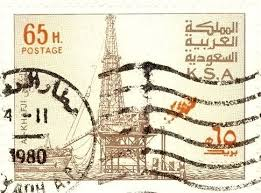 | |
| eBay | Saudi Arabia 1976/82 ** Mi.602, SG1169, Oil rig Ölförderung [sfm774] | eBay |  |
| eBay | Saudi Arabia 733 used | eBay | 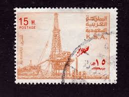 |
| Shutterstock | Vieille Carte Postale: Over 418,450 Royalty-Free Licensable Stock Photos | Shutterstock | 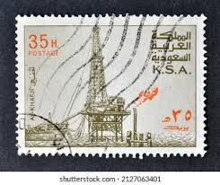 |
| CLASSIC ERROR IN PALESTINE ** **PALESTINE 📍INVERTED ERROR📍 ** KD SOLD |  | |
| Alamy | SAUDI ARABIA - CIRCA 1976: A stamp printed in Saudi Arabia shows Quba Mosque, Medina, circa 1976 Stock Photo - Alamy | 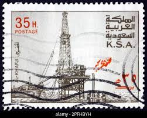 |
| Shutterstock | 7+ Hundred Postage Saudi Royalty-Free Images, Stock Photos & Pictures | Shutterstock | 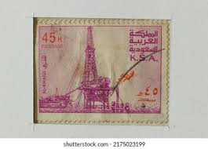 |
| eBay | Error, Variety Saudi Arabia Stamps for sale | eBay | 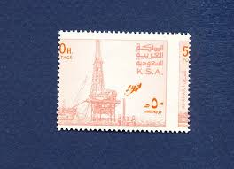 |
| eBay | Green Saudi Arabian Stamps for sale | eBay | 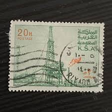 |
| westcargobusiness.com | SAUDI ARABIA | 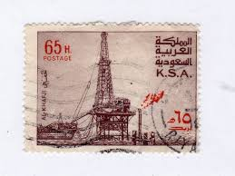 |
| Shutterstock | Vintage Oil Rig: Over 976 Royalty-Free Licensable Stock Photos | Shutterstock | 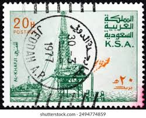 |
| Stamps Art Museum | Saudi Arabia Al Khafji Oil Platform 1976 Stamp - Stamps Art Museum | 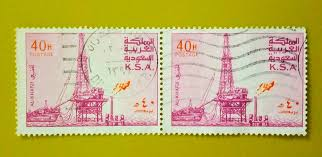 |
| Blogger.com | Heritage of India stamps site: Kingdom of Saudi Arabia K.S.A. stamps | 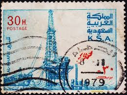 |
| Alamy | 1970s king khalid of saudi arabia hi-res stock photography and images - Alamy |  |
| Dreamstime.com | Isolated Saudi Arabian Stamp Stock Photos - Free & Royalty-Free Stock Photos from Dreamstime |  |
| eBay | Saudi Arabia 741 used | eBay | 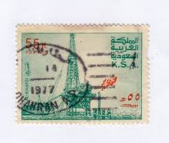 |
| Shutterstock | Saudi Arabia Circa 1976 Stamp Printed Stock Photo 231808870 | Shutterstock | 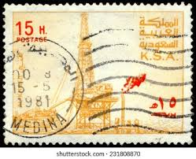 |
| Find Your Stamps Value | Value of 25 heller stamps | 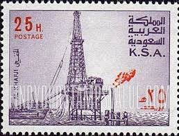 |
| Dreamstime.com | 111 Saudi Queen Stock Photos - Free & Royalty-Free Stock Photos from Dreamstime | 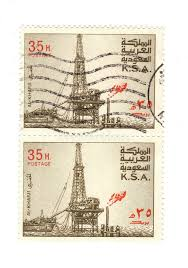 |
| eBay | Handstamped Historical Events Middle Eastern Stamps for sale | eBay | 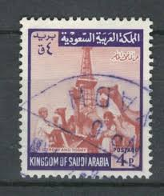 |
| eBay | Orange Middle Eastern Stamps for sale | eBay | 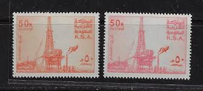 |
| HipStamp | Saudi Arabia Scott#736 1977 30h AL Khafji OIL RIG - Used | Middle East - Saudi Arabia, General Issue Stamp / HipStamp | 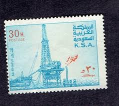 |
| Find Your Stamps Value | Al Khafji oil rig - جهاز تنقيب النفط الخفجي 35h Sepia & orange stamp price, value | 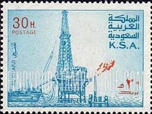 |
| eBay | Saudi Arabia 1976/82 ** Mi.609 I a+b, SG1176+1176a, Oil rig Ölförderung [sfm566] | eBay | 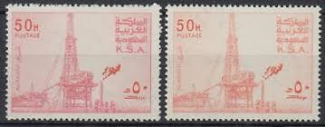 |
| eBay UK | SAUDI ARABIA SC# 806-807 - MNH | eBay UK | 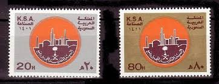 |
| eBay | 👍SAUDI ARABIA 1976 OIL DERRICK SC#738/I gutter PAIR MNH 💲FREE SHIPPING💲 | eBay | 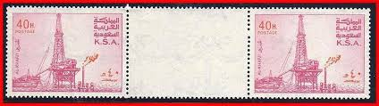 |
| Daraz | Buy mints for school Online at Best Price in Pakistan - Daraz.pk |  |
| Dreamstime.com | Saudi Arabia King Flag Stock Photos - Free & Royalty-Free Stock Photos from Dreamstime | 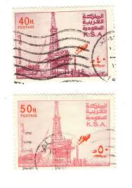 |
| HipStamp | Saudi Arabia 1976-81 Oil Rig at Al-Khafji 25h (deep dull ... | Middle East - Saudi Arabia, Stamp / HipStamp | 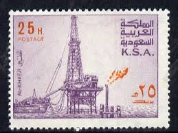 |
| Shutterstock | 53+ Thousand Postal Service Stamp Royalty-Free Images, Stock Photos & Pictures | Shutterstock | 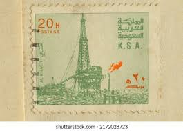 |
| DealBid | Browse Listings in Stamps > Middle East > Saudi Arabia - 10 items per page | DealBid | 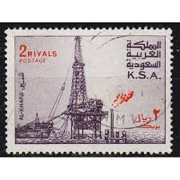 |
| Alamy | Eva peron portrait hi-res stock photography and images - Alamy | 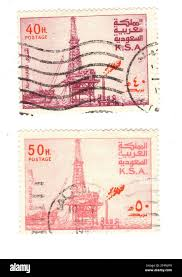 |
| eBay | First Day of Issue Saudi Arabian Stamps for sale | eBay | 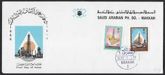 |
| Alamy | Peron argentina hi-res stock photography and images - Page 18 - Alamy | 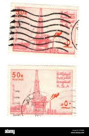 |
| Shutterstock | Saudi Arabia Circa 1949 Stamp Printed Stock Photo 161805977 | Shutterstock | 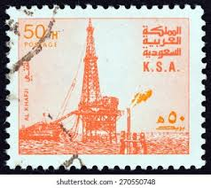 |
| CollectorBazar | K.S.A Oil ExplorationUsed - B1923 |  |
| Dreamstime.com | 103 Saudi Arabia Queen Stock Photos - Free & Royalty-Free Stock Photos from Dreamstime |  |
| UNC.UA | Филателия — купить марки и конверты Саудовской Аравии на аукционе для коллекционеров UNC.UA | 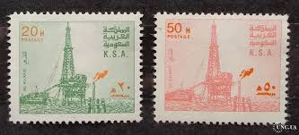 |
| British Postal Agencies of the Gulf Mail with Mixed Franking – KUWAIT 1958 cover with mixed franking sent to Bahrain. Philatelic, yes absolutely, but still a nice cover #kuwaitstamps #kuwaitpostalhistory#kuwaitpostoffice #kuwait #q8pns # |  | |
| Saudi Arabia 29+p 55H POSTAGE كة المملكة العربية السعودية .S.A. AL-KHAFJI AL KHAFJI | 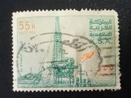 | |
| eBay | 111975] Saudi Arabia 1981 Industry week MNH | eBay | 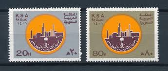 |
| Avion Thematics | Saudi Arabia 1976-81 Oil Rig At Al-Khafji 30h With Upright Wmk, Unmounted Mint SG 1172*, stamps on , stamps on oil , stamps on |  |
| Dreamstime.com | Vintage Postage Stamps from Saudi Arabia. Editorial Photography - Image of philatelic, white: 313378297 |  |
| Free stamp catalogue | Stamps from Saudi Arabia - Freestampcatalogue.com - The free online stampcatalogue with over 500.000 stamps listed. | 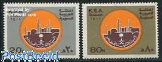 |
| Alamy | Postage stamp saudi arabia hi-res stock photography and images - Alamy | 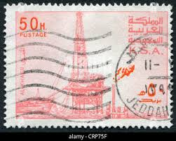 |